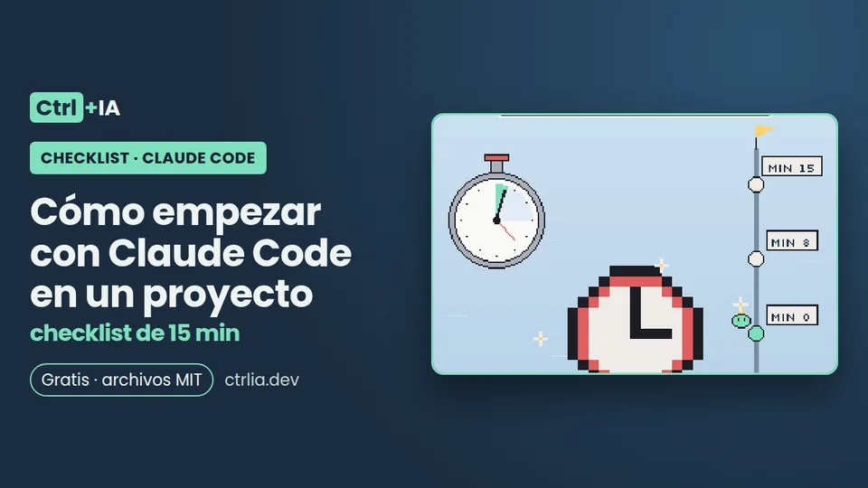

Checklist · Básico · 15 min
Cómo empezar con Claude Code en un proyecto: checklist de 15 min
Los primeros 15 minutos con Claude Code en un proyecto: revisar la carpeta, modo y modelo, /init, permisos, /context y un primer encargo con evidencia.

Probado con Claude Code 2.1.316 · revisado
Ver los archivos en GitHub Gratis · licencia MIT
Para qué sirve
Seis pasos para los primeros 15 minutos con Claude Code en un proyecto nuevo o recién clonado: revisar la carpeta antes de confiar en ella, saber en qué modo y con qué modelo arrancas, generar un CLAUDE.md corto con /init, ajustar los permisos que vas a necesitar, mirar /context para saber cuánto ocupa todo antes de empezar y hacer un primer encargo bien planteado, con una comprobación que pasa o falla y la evidencia pegada. Vale para la versión 2.1.316 y los valores de fábrica de noviembre de 2026. Si todavía no lo tienes instalado, empieza por Empieza aquí.
La lista
Minuto 0-2: antes de abrir Claude, mira la carpeta
Al abrir claude en una carpeta nueva aparece el diálogo de confianza, y lo que aceptas ahí activa las reglas allow y las carpetas adicionales del .claude/settings.json del proyecto. Antes de eso, los hooks del proyecto ya pueden ejecutarse (con claude -p lo hacen siempre, aunque nunca hayas confiado: lo comprobamos en este PC).
- Por qué: hooks,
env, reglas allow y servidores MCP del repo pueden actuar en tu máquina. - Cómo comprobarlo:
ls -la .claude/ .mcp.json CLAUDE.md AGENTS.mdy lee.claude/settings.json(hooks, env, allow), las skills de.claude/skills/y los servidores de.mcp.json. La checklist de permisos explica qué buscar.
- Por qué: hooks,
- Por qué:
/rewinddeshace las ediciones que Claude hace con sus herramientas de archivos, pero no los cambios hechos solo con comandos de Bash ni los de subagentes: git es tu red de seguridad. - Cómo comprobarlo:
git statuslimpio ygit switch -c claude/primera-tarea.
- Por qué:
- Por qué: si arrancas en el home, la confianza dura solo esa sesión y no se guarda.
- Cómo comprobarlo:
git rev-parse --show-topleveldebe coincidir con la carpeta donde lanzasclaude.
- Por qué: lista las reglas y carpetas que el repo te concedería.
- Cómo comprobarlo: acepta solo si te cuadran. Si no lo has visto nunca en esa carpeta,
claude doctorte avisa de las reglas allow que están en pausa.
El script minuto-0.sh del repositorio hace este minuto por ti (muestra la configuración, el estado de git y, si le das un nombre, crea la rama):
cd ~/proyectos/mi-repo
ls -la .claude/ .mcp.json CLAUDE.md AGENTS.md 2>/dev/null # ¿qué configuración trae?
git status && git switch -c claude/primera-tarea # red de seguridad
claude doctor # ¿ajustes válidos? ¿reglas en pausa?
claude # abre en la raíz y lee el diálogo de confianzaMinuto 2-4: comprueba modo, modelo y esfuerzo
Sin configurar nada, hoy no arrancas como hace unos meses.
- Por qué: desde la 2.1.283, si tu cuenta y tu modelo lo admiten, las sesiones interactivas en la terminal y en VS Code arrancan en auto: un clasificador revisa los comandos y las peticiones de red y Claude no te pregunta por lo rutinario.
- Cómo comprobarlo: lo ves en el indicador de la parte inferior y lo cambias con
Shift+Tab. En un código que no conoces, empieza en plan (/planoShift+Tab): Claude explora y propone sin editar hasta que apruebes el plan.
- Por qué: el modelo «Default» es Opus 5.5 en Pro, Max, Ultra, Team, Enterprise y la API (desde la 2.1.280).
- Cómo comprobarlo:
/modello cambia y lo guarda para las sesiones nuevas; en el selector, la teclaslo cambia solo en esta sesión.
- Por qué: Opus 5.5, Sonnet 5.5 y Haiku 5.5 vienen con esfuerzo medium. Frases como «piensa mucho» o «sé exhaustivo» son texto normal: no suben el esfuerzo;
ultrathinksí pide razonamiento más profundo en ese turno. - Cómo comprobarlo:
/effort statuspara verlo,/effort highpara tareas difíciles.
- Por qué: Opus 5.5, Sonnet 5.5 y Haiku 5.5 vienen con esfuerzo medium. Frases como «piensa mucho» o «sé exhaustivo» son texto normal: no suben el esfuerzo;
- Por qué: es lo primero que conviene saber si algo no se comporta como esperas.
- Cómo comprobarlo:
/statusmuestra versión, modelo, cuenta y conexión. Si algo no carga como esperas,/doctorrevisa instalación, ajustes y CLAUDE.md, y propone arreglos que aplica si confirmas.
Minuto 4-8: /init y un CLAUDE.md que no estorbe
CLAUDE.md se carga en cada sesión y cada línea le quita un poco de atención a Claude en cada tarea. La guía oficial lo resume así: escribe solo lo que Claude no puede encontrar leyendo el repo, o lo que tendría que volver a buscar en cada sesión.
- Por qué: Claude analiza el código y crea un CLAUDE.md con los comandos de build y de tests y las convenciones que encuentra. Si ya hay uno, propone mejoras en lugar de sobrescribirlo. Si encuentra configuración de Codex o de Gemini CLI, ofrece traerla con
/import. - Modo guiado: si quieres un recorrido que también proponga skills, hooks y un
CLAUDE.local.mdpersonal, exportaCLAUDE_CODE_NEW_INIT=1antes de lanzar/init: pregunta qué quieres crear y te enseña una propuesta antes de escribir nada.
- Por qué: Claude analiza el código y crea un CLAUDE.md con los comandos de build y de tests y las convenciones que encuentra. Si ya hay uno, propone mejoras en lugar de sobrescribirlo. Si encuentra configuración de Codex o de Gemini CLI, ofrece traerla con
- Por qué: deja el comando de tests (la línea más útil, según la guía oficial), las decisiones del equipo, el proceso de despliegue, las variables de entorno necesarias y lo que no se debe tocar. Quita la descripción de carpetas y arquitectura (Claude la lee sola) y las mayúsculas o «IMPORTANTE».
- Cómo comprobarlo: cada línea pasa la prueba «¿Claude lo encontraría leyendo el código?». Más en un CLAUDE.md que funciona.
- Por qué: desde la 2.1.277 Claude Code lee AGENTS.md (de Codex o Cursor) cuando no hay CLAUDE.md. Si creas un CLAUDE.md, el AGENTS.md deja de cargarse.
- Cómo comprobarlo: si quieres los dos, pon una línea
@AGENTS.mddentro del CLAUDE.md.
- Por qué: lo personal no debe acabar en git.
- Cómo comprobarlo:
/memoryabre los archivos cargados para editarlos. Lo personal va enCLAUDE.local.md, fuera de git.
Minuto 8-10: los permisos que vas a necesitar
Si estás en Manual, aprobar diez veces npm test te lleva a aprobar sin leer; si estás en auto, conviene que lo delicado pregunte siempre.
- Por qué: saber de dónde viene cada regla evita sorpresas.
- Cómo comprobarlo:
/permissionsmuestra las reglas activas y de qué archivo viene cada una.
- Por qué: los tests y el lint en allow,
git pushe instalar paquetes en ask, y en deny los secretos (Read(./.env),Read(./.env.*)). Recuerda el orden: deny → ask → allow, y un ask pregunta incluso en auto. La receta de permisos tiene la plantilla completa. - Cómo comprobarlo: si una regla allow del proyecto no funciona,
claude doctoren la carpeta te lo dice con «Ignoring N permissions.allow entries … this workspace has not been trusted»: falta aceptar la confianza. Y si el JSON está mal, verás «Invalid settings».
- Por qué: los tests y el lint en allow,
{
"$schema": "https://json.schemastore.org/claude-code-settings.json",
"permissions": {
"allow": ["Bash(npm test *)", "Bash(npm run lint *)"],
"ask": ["Bash(git push *)", "Bash(npm install *)"],
"deny": ["Read(./.env)", "Read(./.env.*)"]
}
}Es el mínimo para empezar en Node (settings.ejemplo.json en el repositorio); cambia los comandos por los tuyos.
- Por qué: valen en todos los proyectos:
denya~/.sshy~/.aws, y"disableBypassPermissionsMode": "disable"si no quieres entrar en bypass por descuido. - Cómo comprobarlo:
python3 -m json.tool ~/.claude/settings.jsony, en la sesión,/permissions.
- Por qué: valen en todos los proyectos:
- Por qué: revisa tus sesiones y propone una lista de comandos de solo lectura para permitir en el proyecto.
- Cómo comprobarlo: revisa la lista antes de aceptarla.
Minuto 10-11: mira /context antes de empezar
Antes de tu primer mensaje, la sesión ya lleva dentro el prompt del sistema, las herramientas, los servidores MCP, las skills, los plugins y tus CLAUDE.md. Saber cuánto ocupa te ahorra consumo en cada mensaje.
- Por qué: verás una cuadrícula de colores con el uso por categoría, qué CLAUDE.md y qué archivos de memoria se cargaron, y sugerencias cuando una herramienta o la memoria ocupan demasiado.
- Si algo pesa sin motivo: servidores MCP que no usas en este proyecto, desactívalos en
/mcp; skills que no usas,/skillsy la teclatlas ordena por tokens, y/skill-doctormuestra su coste y cuánto se usan; plugins, en/pluginla cabecera «Not used recently» agrupa los que no usas; un CLAUDE.md largo, recórtalo o divide las reglas por carpeta en.claude/rules/.
- Por qué: los modelos actuales trabajan con una ventana de 1M de tokens y compactan solos hacia los 967K, así que quedarse sin contexto es raro; aun así, la guía oficial recomienda
/clearentre tareas, porque un contexto centrado da mejores respuestas y cuesta menos. Lo explicamos en /clear o /compact. - Cómo comprobarlo: para el consumo de tu plan,
/usage.
- Por qué: los modelos actuales trabajan con una ventana de 1M de tokens y compactan solos hacia los 967K, así que quedarse sin contexto es raro; aun así, la guía oficial recomienda
Minuto 11-15: el primer encargo, bien hecho
Claude para cuando el trabajo parece terminado. Si no tiene nada que ejecutar que diga si está terminado de verdad, tú haces de suite de tests. La guía oficial lo dice así: dale algo que pueda ejecutar y que devuelva pasa o falla.
- Por qué: un bug acotado o un test que falta se puede comprobar; «mejora el proyecto» no.
- Cómo comprobarlo: puedes decir en una frase qué significa «terminado».
- Por qué: qué archivo, qué síntoma, qué significa «arreglado» y cómo comprobarlo. El ejemplo oficial cambia «arregla el bug del login» por: «los usuarios dicen que el login falla tras caducar la sesión; mira el refresco del token en src/auth/, escribe un test que lo reproduzca y luego arréglalo».
- Cómo comprobarlo: usa la plantilla de primer encargo de abajo (
primer-encargo.mden el repositorio).
- Por qué: «Todos los tests pasan» sin salida no te dice casi nada.
- Cómo comprobarlo: la respuesta trae el comando que ejecutó y su salida.
- Por qué: «entrevístame hasta que puedas escribir la especificación en SPEC.md», y empieza una sesión limpia con ese archivo.
- Cómo comprobarlo: existe un SPEC.md que tú has leído y aprobado.
- Por qué:
/diffmuestra los cambios del árbol de trabajo y/code-reviewrevisa el diff en un subagente que no vio la conversación. - Cómo comprobarlo: antes de fusionar, sigue la checklist antes de fusionar. ¿Cambias de tarea?
/clear.
- Por qué:
Tarea: <qué y dónde: archivo o carpeta>
Síntoma / objetivo: <qué pasa hoy y qué debería pasar>
Terminado significa: <test que debe pasar, comando que debe dar 0, captura que debe verse>
Restricciones: <sin dependencias nuevas, no tocar X, seguir el patrón de Y>
Al final: pega el comando que ejecutaste y su salida.Dentro de la sesión, en orden:
/status versión, modelo, cuenta
/model Default = Opus 5.5 (s = solo esta sesión)
/effort status medium por defecto en Opus/Sonnet/Haiku 5.5
/init genera o mejora CLAUDE.md (CLAUDE_CODE_NEW_INIT=1 para el modo guiado)
/memory revisa y recorta lo que se carga
/permissions reglas activas y de qué archivo vienen
/context cuánto ocupa todo antes de empezar
/plan <tarea> explora sin editar hasta que apruebes
/diff revisa lo que cambió
/code-review revisión en un subagente que no vio la conversación
/clear al cambiar de tareaSi vas a dejar el proyecto configurado para todo el equipo, la plantilla de proyecto trae todo esto ya puesto.
Errores típicos
- Claude ya no te pregunta antes de ejecutar comandos → arrancaste en auto (desde la 2.1.283, si tu cuenta y modelo lo admiten) →
Shift+Tabo"defaultMode": "default"en~/.claude/settings.json. - Tu regla allow del proyecto no hace nada → la carpeta no tiene la confianza aceptada o arrancaste en el home → abre
claudeen la raíz y acepta el diálogo;claude doctorlo confirma. - Escribes «piensa mucho» esperando más razonamiento → es texto normal y no sube el esfuerzo →
/effort highoultrathinken ese turno. - Creaste un CLAUDE.md y Claude dejó de seguir tu AGENTS.md → si hay CLAUDE.md, solo carga ese → añade
@AGENTS.mddentro. - CLAUDE.md larguísimo con la arquitectura descrita → ocupa contexto en cada sesión y Claude la lee sola → déjalo en comandos, decisiones y lo que no está en el código.
- Confías en
/rewindpara deshacer todo → no deshace lo hecho solo con Bash ni lo de subagentes → trabaja en una rama y haz commit antes de cada tarea.
Qué probamos y qué falta
Parcialmente, en este PC (Linux, Claude Code 2.1.316, configuración aislada): claude doctor muestra versión y plataforma y avisa de las reglas allow en pausa por falta de confianza; con una coma rota en settings.json muestra «Invalid settings»; el aviso desaparece al marcar la carpeta como confiable; un hook del proyecto se ejecuta con claude -p antes de pedir sesión. No probamos /init, /model, /effort, /context, /plan ni un primer encargo, porque necesitan una sesión con cuenta: esos pasos salen de la documentación oficial del 1-nov-2026 (commands, memory, model-config, permission-modes, best-practices). Cuando grabemos una sesión real en un repo de prueba, pegaremos aquí la salida de /context y /status.
Preguntas frecuentes
¿Para qué sirve /init?
Para crear el CLAUDE.md del proyecto: Claude analiza el código y escribe los comandos de build y tests y las convenciones que encuentra. Si ya existe, propone mejoras en vez de sobrescribirlo. Con CLAUDE_CODE_NEW_INIT=1 hace un recorrido guiado que también puede proponer skills, hooks y un CLAUDE.local.md, y te muestra la propuesta antes de escribir.
¿Por qué Claude ya no me pregunta antes de ejecutar comandos?
Porque desde la versión 2.1.283, si tu cuenta y tu modelo lo admiten, las sesiones interactivas arrancan en modo auto: un clasificador revisa cada comando y petición de red en lugar de preguntarte. Tus reglas ask y deny siguen valiendo. Si prefieres que pregunte, pon "defaultMode": "default" en ~/.claude/settings.json o cambia con Shift+Tab.
¿Tengo que describir mi arquitectura en CLAUDE.md?
No. La guía oficial lo pone entre los consejos que ya puedes dejar: Claude lee el repositorio solo. Escribe lo que no está en el código (decisiones, despliegue, variables necesarias) y el comando de tests.
Mi repo tiene AGENTS.md, ¿lo uso o creo CLAUDE.md?
Desde la 2.1.277, Claude Code lee AGENTS.md si no hay ningún CLAUDE.md o CLAUDE.local.md en la carpeta o por encima. Si creas un CLAUDE.md, solo carga ese; para usar los dos, pon @AGENTS.md dentro del CLAUDE.md.
¿Qué modelo uso para empezar?
El Default (Opus 5.5 con esfuerzo medium) sirve para casi todo. Sube el esfuerzo con /effort high en tareas difíciles y cambia de modelo al empezar la sesión, no a mitad, porque cambiar de modelo o de esfuerzo hace que se vuelva a leer el contexto sin caché.